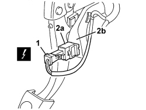

5550D10 BRAKE LIGHT SWITCH - R+R
- Path
- Procedures > 55 ELECTRICAL EQUIPMENT > 5550 WARNING AND MANOEUVRING INDICATORS > 5550D BRAKE AND REVERSING LIGHTS > 5550D10 BRAKE LIGHT SWITCH - R+R
- Kind
- repair procedure (removal / refitting; the operation number is the code)
- Applies to
- all engines; all production periods
- Interactive page
- https://sloeber94.github.io/elrnDB-aBrrSpdr/en/#/946002426
Applies to: all engines; all production periods
 Removing
Removing
 Refitting
Refitting1. Disconnect the electrical connection.
Description | Component |
|---|---|
BRAKE PEDAL SWITCH |
2. Rotate the switch on the brake pedal (2a) through about 90° in an anti-clockwise and extract it from the mounting (2b).

Applies to: all engines; all production periods
Refitting
Removing- Check that the switch is not damaged.
- Gently lower the brake pedal and fit the switch in place, then rotate it through about 90° in a clockwise direction until it is locked.
- Check that the brake lights are working.
Topics linked from this page (1)
Topics that link to this page (22)
- B009 ENGINE DOES NOT START WITH LEVER IN P OR N
- D074 CRUISE CONTROL SYSTEM DOES NOT GO OFF WHEN BRAKE PEDAL PRESSED
- I014 BRAKE LIGHTS AND THIRD BRAKE LIGHT NOT WORKING
- 1060GL CHECK OPERATION OF MAIN ENGINE CONTROL UNIT RELAY
- 1064BE CHECK TURBO VALVE PROTECTION FUSE
- 5580ED ELECTRIC STEERING LOCK CHECK
- E2021 BRAKE LIGHTS - WIRING DIAGRAM
- E2021 BRAKE LIGHTS - COMPONENT LOCATION
- E2021 BRAKE LIGHTS - WIRING DIAGRAM
- E2021 BRAKE LIGHTS - COMPONENT LOCATION
- E5010 IGNITION AND RECHARGING - WIRING DIAGRAM
- E5010 IGNITION AND RECHARGING - COMPONENT LOCATION
- E5010 IGNITION AND RECHARGING - WIRING DIAGRAM
- E5010 IGNITION AND RECHARGING - COMPONENT LOCATION
- E5030 PETROL ENGINE ELECTRONIC MANAGEMENT - WIRING DIAGRAM
- E5030 PETROL ENGINE ELECTRONIC MANAGEMENT - COMPONENT LOCATION
- E5030 PETROL ENGINE ELECTRONIC MANAGEMENT - WIRING DIAGRAM
- E5030 PETROL ENGINE ELECTRONIC MANAGEMENT - COMPONENT LOCATION
- E7022 VDC - WIRING DIAGRAM
- E7022 VDC - COMPONENT LOCATION
- E7051 ROBOTIZED GEARBOX - WIRING DIAGRAM
- E7051 ROBOTIZED GEARBOX - COMPONENT LOCATION